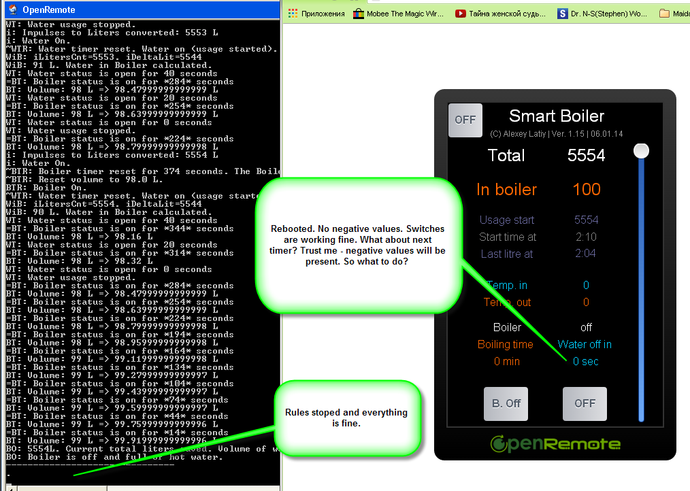

Every time I have "switch"
when Switch (source == "SensWaterOnOff", value == "on")
the code behaves whatever it wants!
Example 1:
//----------------------------------------------------------------------------------------- // Water usage countdown //----------------------------------------------------------------------------------------- rule "Water Off CountDown" timer (cron: 0/20 * * * * ?) when $countdown : WtTimer1() Switch (source == "SensWaterOnOff", value == "on") // <== This can be ignored!!! Or not! then $countdown.setTime_left($countdown.getTime_left() - 20); if ( $countdown.getTime_left() < 20) { execute.command ("WaterOff", "off"); System.out.println ("WT: Water usage stopped."); } end
I see $countdown.getTime_left() goes to nagative values. It means that after
execute.command ("WaterOff", "off");
set to Off, "SensWaterOnOff" is Off and I see it clearly, but the code continues to execute this rule. And I have non-stop cycle.
Same here:
//----------------------------------------------------------------------------------------- // Boiler heating countdown //----------------------------------------------------------------------------------------- rule "Boiler Off CountDown" timer (cron: 0/30 * * * * ?) when $countdown : WtTimer2() $VolData : HotWater() // Global Volume construction Switch (source == "SensBoilerOnOff", value == "on") // <== value == "off" but rule is executing non-stop. :-( then $countdown.setTime_bl_left($countdown.getTime_bl_left() - 30); if ( $countdown.getTime_bl_left() < 30) { execute.command ("BoilerOff", "off"); execute.command ("BoilerTimer", " 0 min"); }
Again Switch may be omited or taken into account.
And this rule can be executed or not absolutely chaotically!
rule "Water in Boiler (difference) calculation" when CustomState (source == "SensLiters", $TotalLiters: value) CustomState (source == "SensWaterStartL", $UsageStartLit: value) Switch (source == "SensBoilerOnOff", value == "on") // <= this may stop executing this rule even if value == "on". then * * * * * * end
If I reboot rules and OpenRemote server some 3-5 times it may start working correctly. Sometimes I need to reboot it 10 times.
Sometimes I switch off (comment) some part of the code, start code and then uncomment and restart again. Everything will work till next restart. So it takes days for things we can do in PHP in 5 hours. 
After 1 month of training I understand it can be a problem with some error in code that is more then 300 strings now. But there is no way to find these errors. Is there any way to check error with some other method? Like online Java validator?
I have no error in terminal windows. 
All other parts of the code working fine. Only "Switch" in "When" construction
behaves unpredictably. Please help. Completely upset.
{kind=link}
{kind=link}
|
What makes me really sad is that 2 countdown timers with "Switches" work fine if I test them separately from the Boiler code. So it can be some non-compatibility. But I don't see any way to find the problem. |
|
 Rebooted. No negative values. Switches are working fine. What about next timer? Trust me - negative values will be present. So what to do? |
|
So you say that after reboot the controller can work correctly or faulty? Does it happen that the controller stops with correct working without the reboot in-between? What is the output when the controller works faulty, or better yet what is the log output where we can see of indeed the switch value is the when statement is not correct? BTW, for proper debugging of your rules file it would be good if you can show the whole rules file. |
|
In addition to what Michal said could you also provide the definitions of all your virtual commands? I had a lot of problems with my rules lately on wrong definitions of my In memory Virtual Devices (At least that is what I think) |
{kind=link}